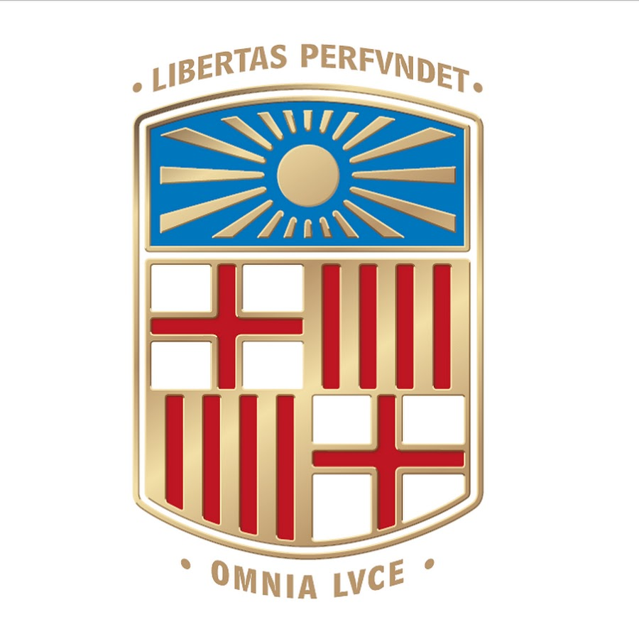

Summary
Passionate biotechnologist with 5+ years of experience between academia and the pharmaceutical industry. I am working in the fields of bioinformatics and data science to bridge the gaps between research and industrial needs by combining wet-lab and computational skills.
Experience
Academia
Centre for Genomic Regulation (CRG) | Pompeu Fabra University
09.2020 - 09.2024
Serrano Group - Design of Biological Systems
-
A systems-biology view of alternative splicing to treat cancer.
-
Software development for omic data analysis.
Barcelona, Spain
ETH Zürich, MSc semester projects and thesis
09.2017 - 09.2019
Christen Group - Synthetic Genomics
-
Engineering CRISPR/Cas9 for multiplexed genome editing.
Sauer/Zampieri Group - Metabolomics
-
Computational inference of antimicrobial mode-of-action through comparative metabolomics.
Zürich, Switzerland

University of Barcelona, BSc Thesis
09.2016 - 07.2017
Grifoll Group - Biodegradation and Bioremediation
-
Discovery of new bacterial communities that degrade creosote compounds.
Barcelona, Spain
University Zürich, BUSS Summer REsearch Scholarship
07.2016 - 08.2016
Bodenmiller Group - Single-cell Systems Biology of Cancer
-
Genetic engineering to study metastasis in breast cancer through single-cell proteomics.
Zürich, Switzerland
Industry
Genome Informatics - Bioinformatician
Functional Genomics Center Zürich
12.2019 - 05.2020
On-demand data analysis and development of bioinformatics open-source packages.
Zürich, Switzerland
Corporate Regulatory Affairs - Data Management
Helsinn Healthcare S.A.
09.2018 - 02.2019
Supporting the Regulatory Affairs department in data management of (pre)clinical documentation creating tailored software.
Lugano, Switzerland
Education
09.2020 - 09.2024
PhD Biomedicine
Centre for Genomic Regulation (CRG)
Pompeu Fabra University - Barcelona, Spain
Supervision: Luis Serrano
CRG PhD Fellowship
09.2017 - 06.2020
Biology MSc with a major in Systems Biology (90 ECTS)
ETH Zürich - Zürich, Switzerland
09.2013 - 09.2017
Biotechnology BSc with a minor in Molecular Biotechnology (240 ECTS)
University of Barcelona - Barcelona, Spain
09.2011 - 06.2013
Baccalaureate of Science
I.E.S. Ramon Llull - Palma, Spain
Publications
-
Anglada-Girotto M. et al., “Combining CRISPRi and metabolomics for functional annotation of compound libraries”, Nat. Chem. Biol. (2022) (Publication)
-
Anglada-Girotto M. et. al. “robustica: customizable robust independent component analysis”, BMC Bioinformatics (2022) (Accepted) (Preprint)
-
Bennisty H., Hernandez-Alias X., Weber M., Anglada-Girotto M., et al. “Evolutionary conservation of A/T-ending codons reflects co-regulation of expression and complex formation” (Under Review) (Preprint)
Conferences
-
Oral Presentation(s)
-
CompSysBio2021: Advanced Lecture Course on Computational Systems Biology (Aussois, France)
-
Poster(s)
-
VIII Bioinformatics Students Symposium 2021 (Madrid, Spain)
-
CRG PhD Symposium 2021 (Barcelona, Spain)
-
RECOMB 2022 (San Diego, US)
-
RNA Society Meeting 2022 (Boulder, US)